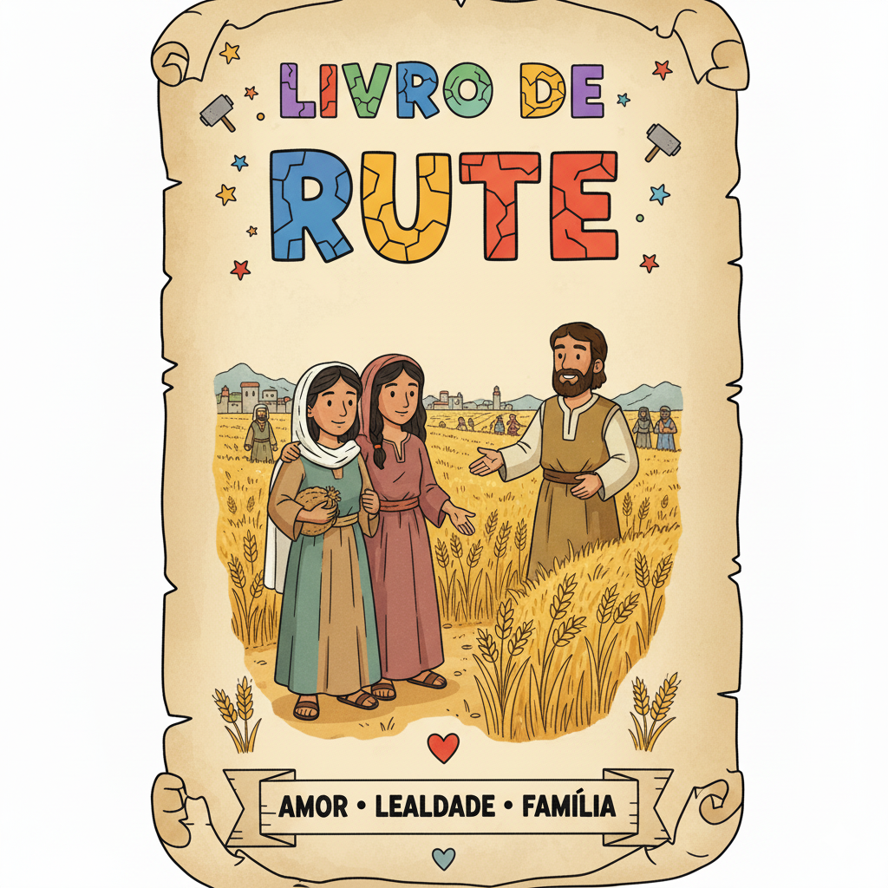
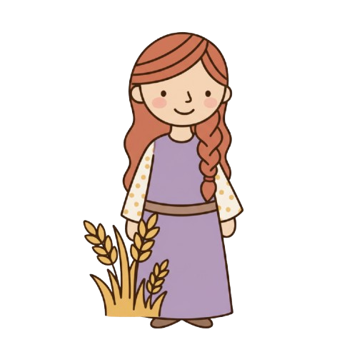
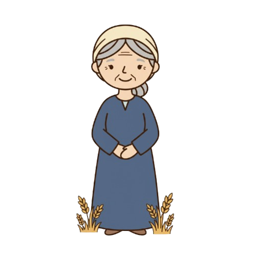
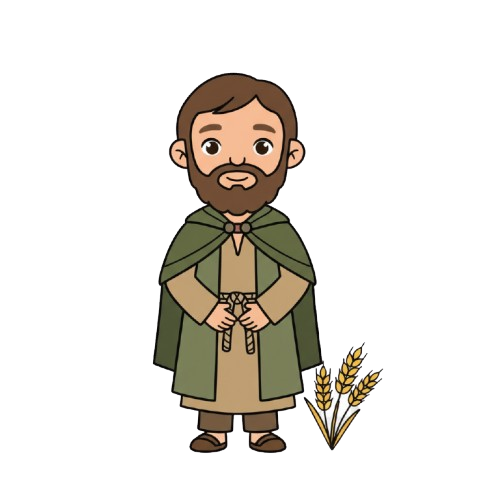
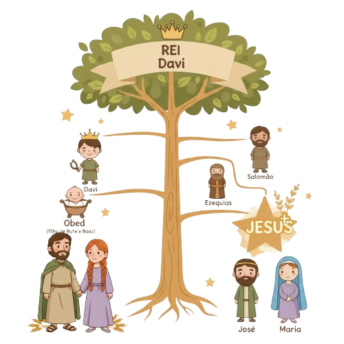

Fidelidade e Redenção — Um Resumo Visual para Crianças
Rute era moabita — estrangeira em Israel. Quando Noemi ficou viúva e sem filhos, disse às noras que voltassem para casa. A outra foi. Rute ficou. Sua declaração em Rute 1:16 é uma das mais belas da Bíblia!
Rute foi colher espigas no campo — o trabalho mais humilde que havia. Mas Boaz a notou, protegeu e abençoou. Quando você trabalha com fé e honestidade, Deus vê — mesmo quando ninguém mais percebe.
Rute se casou com Boaz e teve um filho: Obede. Obede foi pai de Jessé. Jessé foi pai do rei Davi. E Davi é antepassado de Jesus! Uma estrangeira humilde faz parte da linhagem do Salvador do mundo.
"O teu povo será o meu povo e o teu Deus será o meu Deus."
— Rute 1:16
Rute era estrangeira, mas escolheu seguir o Deus de Israel — e isso mudou tudo! Ela não conhecia Israel, mas conhecia o caráter de Noemi. E pelo exemplo de Noemi, Rute foi conquistada pelo Deus vivo.
Lealdade real não some quando as coisas ficam difíceis!
Deus vê quem trabalha com fé e cuida de quem precisa!
Ninguém é estrangeiro na família de Deus — todos são bem-vindos!

Moabita que escolheu o Deus de Israel. Sua lealdade a Noemi e sua humildade no campo de Boaz são exemplo de caráter e fé. Avó do rei Davi e antepassada de Jesus.

Perdeu o marido e os dois filhos em Moabe. Voltou para Belém chamando a si mesma de "Mara" (amarga). Mas a fidelidade de Rute e a providência de Deus restauraram sua alegria!

Rico fazendeiro de Belém, parente de Noemi. Agiu como "go'el" — parente resgatador — ao casar com Rute e resgatar as terras da família. Imagem de Jesus, nosso Redentor!
Noemi ficou viúva em Moabe com as duas noras. Quando decidiu voltar para Belém, mandou as noras voltarem para suas famílias. Orpá foi. Rute ficou — e fez sua famosa declaração de lealdade.
Para sustentar Noemi, Rute foi colher espigas deixadas pelos ceifeiros — direito dos pobres na lei de Moisés (Lv 19:9). Por "acaso" foi parar no campo de Boaz, parente de Noemi. Nada é por acaso com Deus!
Por instrução de Noemi, Rute foi até Boaz na eira e pediu que ele agisse como "go'el" — parente resgatador. Boaz ficou honrado com o pedido e prometeu regularizar tudo. A lei do go'el é imagem poderosa da redenção!
Boaz comprou as terras de Noemi e casou com Rute na frente das testemunhas da cidade. Nasceu Obede — cujo nome significa "servidor". Obede → Jessé → Davi → Jesus. Uma história de redenção que atravessa gerações!

👑 Uma das 5 mulheres na genealogia de Jesus!
Mateus 1 lista 5 mulheres na genealogia de Jesus: Tamar, Raabe, Rute, Bate-Seba e Maria. Rute era moabita — estrangeira! Isso mostra que Jesus veio para salvar pessoas de todos os povos.
🏡 Boaz é imagem de Jesus!
O "go'el" (parente resgatador) tinha que ser parente, querer resgatar e ter condição de pagar o preço. Jesus se tornou humano (parente), quis nos salvar e pagou o preço com Sua vida. Boaz prefigura tudo isso!
📚 Um dos dois livros com nome de mulher!
Rute e Ester são os únicos livros da Bíblia com nome de mulher como título. Rute tem apenas 4 capítulos — um dos livros mais curtos do Antigo Testamento, mas com uma das histórias mais ricas!
Rute poderia ter voltado para a família em Moabe — seria mais fácil. Por que você acha que ela escolheu ficar com Noemi mesmo sem nada a ganhar?
Rute foi colher "por acaso" no campo de Boaz — mas será que foi mesmo por acaso? Como você enxerga a mão de Deus nos "por acasos" da sua vida?
Boaz pagou um preço para resgatar Rute e Noemi. Jesus pagou um preço para nos resgatar. O que você sente quando pensa que Jesus quis ser seu "parente resgatador"?
Escolha um amigo ou familiar que precisa de apoio e demonstre que você está ao lado dele — não por obrigação, mas por amor. Seja como Rute!
Leia Mateus 1:1-17 e procure o nome de Rute na genealogia de Jesus. Conta quantas gerações existem entre Rute e Jesus — vai surpreender!
Jesus é nosso parente resgatador — veio, pagou o preço e nos trouxe para a família de Deus. Esta semana, escreva uma pequena oração agradecendo a Ele por isso!
Trilho Kids | Desenvolvido com ❤️ para crianças © 2025